<!DOCTYPE html>
<html lang="en">
<head>
<meta charset="utf-8">
<meta name="viewport" content="width=device-width, initial-scale=1">
<title>Bloom — blazek.design</title>
<link rel="preconnect" href="https://fonts.googleapis.com">
<link rel="preconnect" href="https://fonts.gstatic.com" crossorigin>
<link href="https://fonts.googleapis.com/css2?family=Instrument+Serif:ital@0;1&display=swap" rel="stylesheet">
<link rel="preload" as="image" href="frames1/f001.jpg">
<link rel="stylesheet" href="style.css">
</head>
<body>
<main class="hero" id="hero">
  <canvas id="bg" aria-hidden="true"></canvas>

  <!-- Off-screen sources, drawn into #bg -->
  <video id="v2" muted playsinline preload="auto">
    <source src="video/v2.mp4" type="video/mp4"><source src="video/v2.webm" type="video/webm">
  </video>
  <video id="v3" muted playsinline preload="auto">
    <source src="video/v3.mp4" type="video/mp4"><source src="video/v3.webm" type="video/webm">
  </video>

  <div class="copy" id="copy">
    <h1 class="txt txt-a" id="textA" aria-label="A big, happy flower that follows the sun it grows strong and tall, with a face full of seeds."></h1>
    <p class="txt txt-b" id="textB" aria-label="nvm ;)"></p>
  </div>

  <aside class="media" id="media" aria-label="Hand tracking">
    <video id="cam" muted playsinline></video>
    <canvas id="skel"></canvas>
    
    <pre class="debug" id="debug" hidden></pre>
    <div class="label" id="label">Loading</div>
    <div class="meter"><i id="meter"></i></div>
  </aside>

  <div class="ring" id="ring"></div>
</main>
<script type="module" src="app.js"></script>
</body>
</html>
